前言
手写体数字识别——归一化与特征提取技术研究
论文
题目
Paper-Handwritten digit recognition-investigation of normalization and feature extraction techniques
作者
Cheng-LinLiu, Kazuki Nakashima, Hiroshi Sako, Hiromichi Fujisawa
期刊来源
Pattern Recognition
出版日期
2004-02
期卷
37 (2004) 265 – 279
Abstract
在开发字符识别系统（developing character recognition system）中，各种性能的评估（the performance evaluation）对选择正确的方案（select the correct options）至关重要。
之前的工作中，我们提出了长宽比自适应归一化（aspect ratio adaptive normalization, ARAN），并评估了最先进的**特征提取（state-of-the-art feature extraction）和分类技术（classification techniques）**的性能（performance）。
这一次我们提出了一些改进的归一化函数（improved normalization functions）和方向特征提取策略（direction feature extraction strategies），并将其与现有技术进行性能方面的比较。
我们比较了三个不同数据源中（three distinct data sources）：
- 10 个归一化函数（normalization functions）
- 7 个基于 dimensions
- 3 个基于 moments
- 8 个特征向量
将归一化函数和特征向量结合起来，对每个数据集（each dataset）产生 80 个分类正确率（eighty classification accuracies）。
归一化函数的比较表明，基于 dimensions 的归一化函数的性能优于基于 moments 的归一化函数，而且纵横比映射（aspect ratio mapping）是流畅（influential）的。
特征向量的比较表面，改进后的特征提取策略（improved feature extraction strategies）优于基线策略（baseline counterparts）。
灰度图像（gray-scale image）中的梯度特征（gradient feature）表现最好，改进的 **NCFE（normalization-cooperated feature extraction）**特征也表现良好。
归一化（normalization）、**特征提取（feature extraction）和分类（classification）**的结合在知名数据集上产生了非常高的精度。
1 Introduction
- **Optical character recognition（OCR）**光学字符识别
- Character recognizer 字符识别器，包括以下任务：
- pre-processing 预处理
- 归一化图像（normalized image）的大小（size）和纵横比（aspect ratio）
- 像素值（pixel values）的插值技术（interpolation technique）
- feature extraction 特征提取
- classification 分类
- 参数（parametric）和非参数（nonparametric）统计分类（statistical classifiers）
- 神经网络（neural networks）
- 支持向量机（support vector machines, SVMS）
- 混合分类器（hybrid classifiers）
- pre-processing 预处理
对于 pre-processing，我们已经证明了字符图像的归一化对识别性能有重要的影响，提出了长宽比自适应归一化（ARAN）策略来提高识别性能。
对于 feature extraction，重点研究了 ARAN 实现的多样性（the diversity of implementation）和方向特征提取（direction feature extraction）。
ARAN 的性能取决于纵横比映射函数（aspect ratio mapping function）。
direction feature 是 character recognition 中最常用的特征。其性能在很大程度上取决于特征的表示（representation of feature）和提取技术（extraction technique）。
特征向量表示表示链码（chaincodes）或梯度（gradients）的方向分布。
新的特征向量旨在提高 NCFE（normalization-cooperated feature extraction）的性能。
Normalization 被认为是字符识别中最重要的预处理因素。
通常，字符图像通过**插值（interpolation）/ 外推（extrapolation）线性映射（linearly mapped）**到一个标准平面上。
通过线性映射，除了纵横比变化外，字符形状不会变形。
-
**透视变换（perspective transformation）**试图纠正字符宽度的不平衡。
-
矩归一化（moment normalization） 试图纠正旋转或倾斜（slant）。
-
**非线性归一化（nonlinear normalization）**用于均衡线密度（equalize the line density）。
-
**倾斜归一化（slant normalization）**可以通过上下文（context）来估计，而不是 moments。
Feature extraction 是字符识别的核心。
-
局部行程方向分布（distribution of local stroke direction）（direction feature）用于其高性能和易于实现而被广泛应用。
-
**局部描边方向（local stroke direction）**可以通过：
- skeleton 骨骼
定义：对于给定的文字图像，找出其骨架（Skeleton）线的处理称为细化处理。
作用：骨架线指文字图像线宽的中心线，其宽度为 1 bit。失去了笔画宽度信息，但保留了文字结构信息，有利于笔画特征的提取，是提取结构特征的基础。
- chaincode 链码
- gradient 梯度
来测量。
-
chaincode feature 被广泛采用
-
gradient feature 适用于灰度图像和二值图像。
-
为了增强方向特征的识别能力，提出了一些互补特征（complementary features）：如
- structural and curvature feature（结构特征和凹面特征）
- profile shape feature（廓形特征）
- curvature feature（曲率特征）
另一方面，所谓的归一化协同特征提取（normalization-cooperated feature extraction, NCFE）方法是从归一化图像之外的原始图像提取方向特征。
我们之前评估了手写字符识别中的一些统计（statistical）和神经分类器（neural classifiers），并发现一些分类器在低复杂度下具有很高的准确性。
SVM 在分类精度方面具有优势，但计算成本非常高。
为了测试归一化（normalization）和特征提取技术（feature extraction techniques）的性能，我们使用了三个具有较高精度的分类器：
- 多项式分类器（polynomial classifier）
- 判别学习二次判别函数（discriminative learning quadratic discriminant function, DLQDF）
- 径向基函数核（SVC-rbf）支持向量分类
- 个特征向量
- 基本特征类型（basic feature types）
- chaincode feature 链码特征
- profile shape feature 廓型特征
- NCFE 特征
- gradient feature 梯度特征
- 对 NCFE 的两种改进版本：
- enhanced NCFE with profile shape feature 增强的 NCFE 与轮廓形状特征
- 连续 NCFE
- 基本特征类型（basic feature types）
- 个数据库
- CENPARMI
- NIST
- Hitachi
基于 个归一化函数 和 个特征向量的组合给出了 个 classification accuracies。
此外，每个特征向量根据方向的分辨率有两种变化： 个方向和 个方向，分别评估。
文章结构：
- 第 2 节描述了规范化策略；
- 第 3 节描述了特征提取技术；
- 第 4 节给出实验结果；
- 第 5 节给出结论。
2 Normalization techniques
2.1 Implementation of normalization 归一化的实施
为了便于特征提取和分类，归一化图像平面(标准平面)的 维数（大小）是固定的。
然而，在纵横比自适应归一化（ARAN）中，标准平面的维度不一定是填充的。
根据纵横比，归一化图像以一维填充的平面为中心。 假设标准平面为正方形，边长用 表示。将归一化字符图像的宽度和高度分别表示为 和 ，纵横比定义为
如果归一化图像填充一维，则 。但是，在字符图像质心对准标准平面中心的矩归一化中，归一化图像不一定填充一维，可能会超出标准平面。在这种情况下，和 不由 L 决定，将标准平面外的图像部分截断。
在 ARAN 的实现中，将规范化的字符图像填充到另一个尺寸为 的柔性平面中，然后通过对齐边界或质心将该柔性平面平移至与标准平面重叠。 在下面，我们将演示如何将大小为 的字符图像转换为大小为 的规范化图像。转换可以通过正向映射或反向映射来完成。 将原图像和归一化后的图像分别表示为 和 ，归一化后的图像由 基于坐标映射生成。 正向映射（forward mapping）和反向映射（backward mapping）由 和 分别给出。
我们描述各种归一化方法的坐标映射（coordinate mapping of various of various normalization methods），然后解决像素的插值问题（interpolation of pixels）。
- 线性归一化（linear normalization）
- 矩归一化（moment normalization）
- 斜归一化（slant normalization）
- 非线性归一化（nonlinear normalization）
的正向映射（forward mapping）和反向映射见表1。
各种归一化方法的坐标映射
| Method | Forward mapping | Backward mapping |
|---|---|---|
| Linear | ||
| Moment | ||
| Slant | ||
| Nonlinear |
-
其中， 和 表示变化比（ratios of transformation）：
-
-
moment normalization 是指不旋转的线性变换，归一化图像的中心和大小由矩决定。
-
表示原始图像的重心：
-
表示归一化平面的重心：
-
-
在基于 moments 的 slant normalization，倾斜角度由二阶矩计算：
- 其中，（中心距）
-
对于 nonlinear normalization， 和 表示归一化后的累计线密度直方图（line density histograms）。
-
在 forward mapping 中， 和 是离散的，但 和 不一定是离散的。
-
在 backward mapping 中， 和 是离散的，但 和 不一定是离散的。
-
在 forward mapping 中，所映射的坐标表示 不一定填满归一化平面中的所有像素。因此在实现归一化时，需要进行坐标离散（coordinate discretization）或像素插值（pixel interpolation）
所有（original）字符图像都具有二值灰度（binary gray levels）。
我们使用坐标离散化（coordinate discretization）生成二进制归一化图像（binary normalized images）。
使用像素插值（pixel interpolation）生成灰度归一化图像（gray-scale normalized images）。
- 通过 discretization，映射的坐标 或 近似为最接近的整数 或
- 在 the discretization of backward mapping 中，离散坐标 扫描归一化后的像素平面和灰度 分配给 。
- 在 discretization of forward mapping 中，离散坐标 扫描原始图像的像素，灰度 被赋给从 到 。
在反向映射生成灰度图像的插值（interpolation of backward mapping for generating gray-scale）中：
- 映射位置（mapped position） 被四个离散的像素包围。
- 灰度 是四个像素值的加权组合。
在前向映射插值生成灰度图像时，将原图像和归一化图像中的每个像素看作一个单位面积的平方。 通过坐标映射，将原图像的单位正方形映射到归一化平面上的矩形。
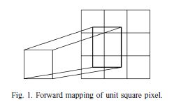
如图所示，在归一化平面中，每个与矩形重叠的单元正方形都被赋予与重叠面积成比例的灰度。
2.2 Aspect radio mapping 纵横比映射
为了实现归一化，需要确定归一化图像的宽度 和高度 。我们假设 等于标准平面的边长 。而 由 中的纵横比决定，归一化后的图像纵横比与原始图像的纵横比相适应。因此长宽比映射函数决定了归一化图像的大小和形状。
-
基于 dimension 的归一化，以实际图像的宽度和高度作为尺寸。
-
基于 moment 的归一化，
- 原始图像的重心被设为中心点
- 边界被重新设置为 和
- 尺寸被重新设置为 和
- 其中，
图像的矩归一化是图像预处理的一种方法，相对于直接的线性归一化，矩归一化的优势在于它利用了图像的矩信息，将原图像归一化到幕布大小的同时使得原图的中质心与幕布的中心对齐，同时尽可能的去除了原图中的边界区域（margin）。图像矩归一化_夜半罟霖的博客-CSDN博客_图像矩阵归一化
图像平面被扩展或修建，以便适应在范围内。
- 计算原始图像的纵横比：
-
改变归一化策略和纵横比映射函数，10 个归一化函数如下所示。
| 序号 | 描述 | 公式 |
|---|---|---|
| 固定长宽比（拉伸） | ||
| 保留长宽比 | ||
| 长宽比的平方根 | ||
| 长宽比的立方根 | ||
| 分段线性长宽比 | ||
| 长宽比的正弦值的平方根 | ||
| 的 nonlinear 归一化，线密度直方图计算采用的方法 | ||
| 保留长宽比的 moment 归一化 | ||
| 长宽比平方根的 moment 归一化 | ||
| 长宽比立方根的 moment 归一化 |
-如图所示，其中 、 优于 。
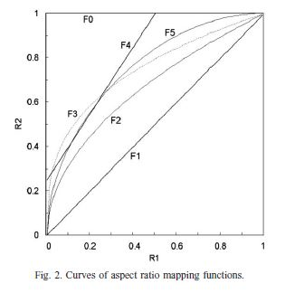
所有的归一化函数都是通过正向映射来实现的。图 3 为归一化函数对应的同一原始图像。
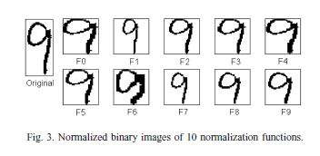
图 4 为对应的同一原始图像和归一化后的二值图像和灰度图像。
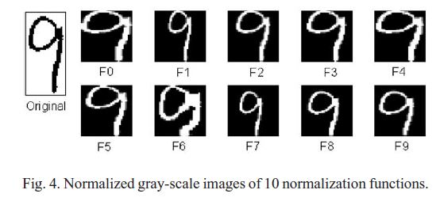
标准归一化平面尺寸为 ，当归一化图像的长宽比与原始长宽比偏离较大时，字符形状的变形也是相当大的。（如 和 ）
对于基于矩的归一化（， 和 ），归一化图像在中心点居中，标准平面的任何维度都不被填充。
使用 Python 尝试代码复现 - ：
1 | |
1 | |
(76, 35)
1 | |
1 | |
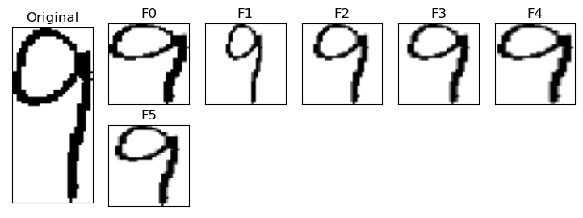
3 Feature extraction techniques 特征提取技术
-
我们提取了三种类型的方向特征:
-
chaincode feature chap8-3 二值图像处理和形状分析之图像矩、方向链码、傅立叶描绘子_哔哩哔哩_bilibili
-
NCFE feature
-
gradient feature
-
-
根据是否使用 slant normalization，chaincode feature 有两种变换。
-
对于 chaincode feature 和 gradient feature extraction，将归一化后的图像分解为 个方向平面或 个方向平面。
-
在 NCFE 中，原始图像的边缘像素直接映射到 向或 向平面上。
-
对于 feature measuring，将每个特征平面（feature plane）划分为均匀的区域（uniform zones），并将每个区域的强度累积为一个测量值，或将模糊掩膜（blurring masks）与该平面进行卷积以给出测量值。
-
带模糊掩膜的卷积相当于低通滤波（low-pass filtering）和采样（sampling）。通常，使用高斯掩膜：
-
其中 与模糊掩膜之间的间隔有关，可以看作是采样间隔（sampling interval），是采样频率的倒数（the reciprocal of sampling frequency）。
经验公式
- 其中 是 轴和 轴模糊蒙版（blurring masks）
-
在中心 的模糊掩膜，卷积给出了一个测量值：
-
使用 Python 复现高斯掩膜：
1 | |
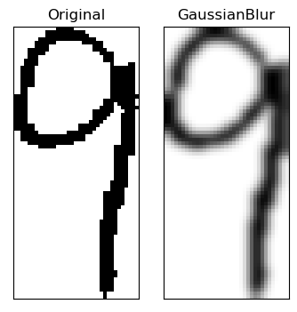
-
在 chaincode feature extraction 中，将归一化图像的轮廓赋给 方向码：
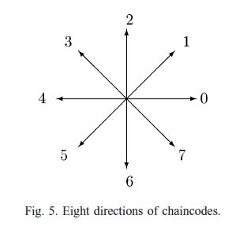
并将每个方向的轮廓像素赋给相应的方向平面。链码的分配可以在图像的光栅扫描（raster scan of the image）中完成，无需轮廓跟踪（contour tracing）。在这个过程中，一个具有多个连接的像素可以被分出多个 chaincodes。若要提取 方向特征，则将每对相反方向的平面合并为一个特征平面，并对 个平面进行模糊处理。
-
对于 NCFE，原始图像中的每一个 chaincode 都被视为是一个线段，该线段被映射到标准平面方向平面上的另一个线段。
-
在 direction plane 上，每个与线段在主方向（ 或 ）上相交的网格单元都被赋予了一个方向贡献单位。
-
由于线段对网格单元的覆盖不是离散的，我们在此提出了一种基于连续特征平面的改进的 NCFE 方法。
-
在 continuous plane 上，像素被视为一个正方形，方向长度与落在这个正方形中的线段长度成正比。
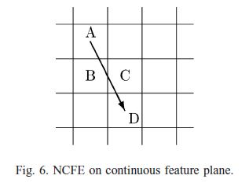
- 如图 6 所示，从链码映射的线段覆盖了 4 个单元 A、B、C、D。
- 通过离散的 NCFE， 和 被分配成一个一个方向单元。
- 通过连续的 NCFE，所有 个单元都被分配与单元线段长度成比例的方向强度。
- 注意，对于 NCFE，有时平滑字符图像是必要的，以便 chaincode 更好地解释笔画方向。
gradient feature extraction 中，采用 Sobel 算子计算梯度的 分量。将梯度图像分解为 4 个方向平面或 8 个方向平面。其他学者也使用 Roberts 算子和 Kirsh 算子。
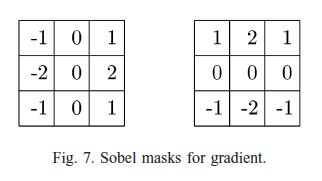
梯度 \mathbf{g}(x,y)=[g_x，g_y]^T，位置 ：
使用 Python 复现 Sobel masks：
1 | |
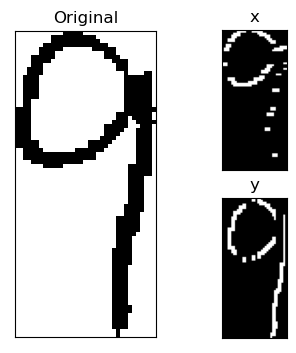
梯度强度和方向可以从向量 得出.对于字符特征提取，计算归一化图像上每个像素的梯度。梯度方向的范围被划分为若干个区域(比如 个或 个)，每个区域对应一个方向平面。每个像素被分配到一个方向区域，梯度强度贡献相应平面的强度。然而，在我们的实验中，我们采用了另一种策略，即将每个梯度向量分解为标准方向上的分量。
该策略曾用于在线字符识别的特征提取。我们将梯度向量分解成八个链码方向。如果梯度方向位于两个标准方向之间，则在两个标准方向上分解为两个分量，如图 8。
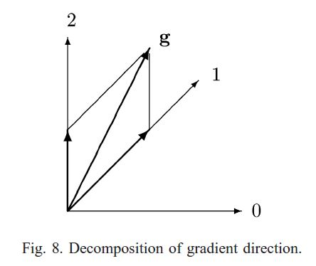
梯度特征可以从二进制或灰度归一化图像中提取。从一个二值字符图像，灰度归一化图像是通过前向二值到灰度像素映射生成的。我们也称这种方法生成的灰度图像为伪灰度图像。伪灰色图像的梯度特征是对二值图像梯度特征的改进。
为了增强方向特征的识别能力，我们将结构特征和形状特征作为互补特征。结构特征表示为水平交叉计数，而形状特征表示为最外边缘与凸包之间的距离。交叉计数和距离序列也通过一维高斯掩模进行模糊处理，以给出特征测量。由于归一化平面设置为 像素，序列的长度为 。我们提取了 个模糊的水平交叉计数和 个（左和右）正面形状测量。这些测量值被添加到模糊链码特征中，以形成增强的特征向量。
NCFE 功能还可以通过补充功能来增强。采用 NCFE 方法计算交叉计数和轮廓形状距离，并将其映射到标准平面上。然后，它们被模糊，以给出 个测量值，以添加到 NCFE 方向特征中。增强的 NCFE 特征以及连续的 NCFE 特征可以被视为对现有 NCFE 方法的改进。
在我们的实验中，我们测试了八个方向特征或增强的特征向量。每个特征向量有 4 个方向和 8 个方向。 特征向量如下所示。
| 特征向量 | 描述 | 方向 | 方向 |
|---|---|---|---|
| blr | blurred chaincode feature，在每个特征平面上，均匀放置 5×5 高斯掩模来计算 个测量值。 | 100D | 200D |
| des | deslant chain feature，对原始图像进行去噪和归一化，提取链码特征。 | 100D | 200D |
| mul | enhanced chaincode feature with complementary（互补的）features. | 133D | 233D |
| ncf | discrete NCFE direction feature. | 100D | 200D |
| ncf-p | discrete NCFE direction feature plus complementary features. | 133D | 233D |
| ncf-c | continuous NCFE direction feature. | 100D | 200D |
| grd | gradient feature from binary images（二值图像的梯度特征）. | 100D | 200D |
| grd-g | gradient feature from pseudo gray-scale images（伪灰度图像的梯度特征）. | 100D | 200D |
为了修改特征分布以提高分类性能，对特征向量中的所有测量值进行变量变换 。这个变换也被称为 Box-Cox 变换。为了计算方便，我们在实验中没有对功率参数进行优化，而是设置为 。
4 Experimental results
4.1 Reults on CENPARMI database
CENPARMI (加拿大康科迪亚大学)的手写数字数据库包含 6000 张数字图像(10 个班级各 600 张图像)，从美国邮政的实时邮件中收集，扫描为 166DPI。 在数据库中，4000 张图像被指定用于训练，剩下的 2000 张图像用于测试。
使用了两种分类：
- 多项式分类器 polynomial classifier（PC）
- 径向基函数核支持向量分类器 support vector classifier with radial basis function kernel（SVC-rbf）
其中 表示平均错误率。
的倒数对应 ratio of error rate between the best method and an alternative method.
- 当 ratio of error rate 时（对应的 ），我们认为备选方法 competitive to the best one。
- 当 ratio of error rate 时（对应的 ），我们认为备选方法 is good。
- 当 ratio of error rate 时（），我们认为备选方法 is fair。
- ratio of error rate （）说明替代方法性能较差。
，，， 表现最好，保留纵横比的 和 效果较差。
4.2 Results on NIST database
我们利用 NIST 特殊数据库19 (SD19)的光盘制作了一个实验数据库。训练数据集由600位作者的数字样本组成。(no.0–399 and no.2100 –2299)，测试数据集由400位作者的数字样本组成。(no.500–699 andno.2400 –2599)。训练数据集和测试数据集的样本总数分别为66,274和45,398。图像以300DPI扫描。 NIST数据库的字符图像存在大量的轮廓噪声，因此对 NCFE 进行平滑是必要的。 在NIST数据库的识别中采用
-
多项式分类器 polynomial classifier（PC）
-
判别学习二次判别函数(DLQDF)两类方法。
- 特征向量 dec 和 grd-g 在四种表现最好。
- ncf-p 和 ncf-c 相对于 ncf 优势明显。
4.3 Results on Hitachi database
为了测试对日立公司收集的数据库对日文字体的识别性能。样本采集自样本表和真实表格(保险申请、银行交易等)图像，扫描精度为 200DPI。训练数据集包含 164,158 个样本，我们用这些样本来训练具有 80 个主成分的 PC。
- ，，，，， 表现最好，保留纵横比的 和 效果较差。
- des 的性能较差，可能是因为在日语风格写作中，数字图像的倾斜度并不大。
4.4 Speed of feature extraction
方向特征要比 方向特征花费更多时间。
要花费更多时间。
5 Conclusion
我们在不同来源的大型数据库上比较了十个归一化函数和八个特征向量在手写数字识别中的性能。标准化函数实现了基于维度的线性/非线性标准化和具有变化纵横比映射的基于度量的标准化。识别结果表明，矩归一化函数F8和F9的分类精度最高。纵横比映射对基于维度和基于矩的归一化的识别性能都有影响。
心得
这是一篇关于文字识别的论文，主要讲述了文字识别中，对文字图像数据的处理中归一化和特征提取方面的内容。我尝试对论文中的部分内容进行代码复现，在看论文和代码复现的过程中，学习到了不少数字图像处理方面的知识，了解到了一些新概念——链码，图像的重心，图像的矩等。通过特征工程，以提高在机器学习中的准确率。